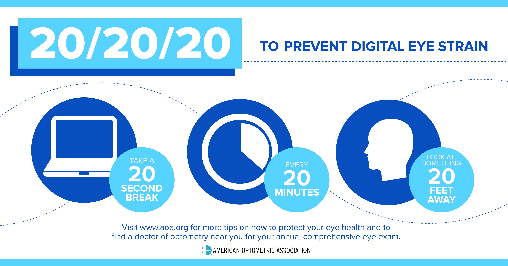
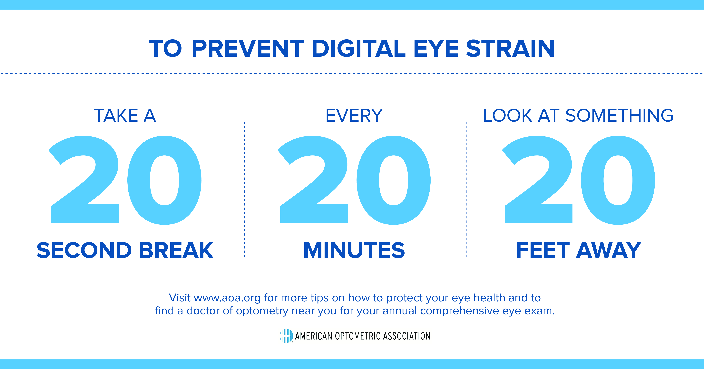

In today's screen-dominated world, it's easy to lose track of time and strain our eyes, which can lead to discomfort and long-term issues.
That's why we're here: to help you follow the 20/20/20 rule and make a habit of giving your eyes a much-needed break.
My website runs a 20-minute timer from the moment you arrive, gently nudging you to look away from your screen and focus on something 20 feet away for 20 seconds when the timer is up.
During those 20 minutes, simple, engaging messages about eye health will be shared. It's a small step towards a healthier you.
Let me be your partner in building mindful screen habits. Together, we can protect our vision while staying connected to the digital world.


Remember: small changes make a big difference!